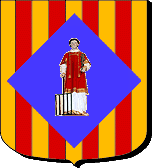
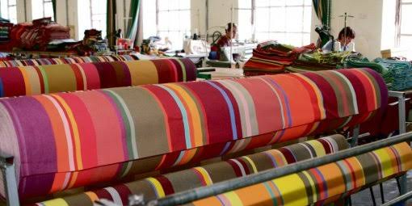

Saint-Laurent
de-Cerdans


⟹ Capitale de l'espadrille catalane ⟸

Saint-Laurent-de-Cerdans occupe une position charnière du Haut-Vallespir, ouverte vers l’Empordà et la Garrotxa par les passages pyrénéens. Ses origines sont rattachées au vieux peuplement des Cérètes, population antique associée à la Cerdagne et à la haute vallée du Tech, ce qui éclaire traditionnellement la seconde partie du toponyme « de Cerdans ».
Au Moyen Âge, l’abbaye bénédictine Sainte-Marie d’Arles-sur-Tech, fondée à la fin du VIIIe siècle, joue un rôle essentiel dans l’organisation religieuse et territoriale du Haut-Vallespir. La paroisse de Saint-Laurent, dont l’église est consacrée au XIIe siècle, relève de la juridiction de l’abbé d’Arles jusqu’à la Révolution. Le bourg se structure autour de deux ensembles longtemps bien identifiés : le Castell, ville haute, et le Molí, quartier du moulin et des activités artisanales.
Les chiffres anciens montrent une croissance progressive. En 1553, Saint-Laurent ne compte encore qu’une vingtaine de feux, bien moins que Prats-de-Mollo. Vers 1730, la population approche déjà le millier d’habitants. Cette progression accompagne le développement des activités forestières, métallurgiques et artisanales d’une vallée riche en bois, en eau et proche des gisements de fer du Canigó.

Le traité des Pyrénées de 1659 transforme profondément la situation du village : le Vallespir passe sous souveraineté française et Saint-Laurent devient une communauté de l’extrême frontière. La restauration de la gabelle du sel suscite rapidement une opposition. Dès 1663, une « sédition de la montagne » éclate à Saint-Laurent, notamment dans le quartier du Molí ; quelques années plus tard, la grande révolte des Angelets embrase l’ensemble du Vallespir.
Cette culture frontalière perdure. Pendant la Révolution, en avril 1793, la ville ouvre ses portes aux troupes espagnoles. Au XIXe siècle, la proximité de la Catalogne méridionale nourrit les échanges, la contrebande et les engagements liés aux guerres carlistes. Les habitants circulent dans un espace où les liens familiaux et économiques franchissent constamment une frontière politique relativement récente.
L’économie industrielle prend alors une importance exceptionnelle. Les forges catalanes travaillent le minerai de fer du Canigó et consomment de grandes quantités de charbon de bois. Lorsque cette activité décline, le bois, les scieries et surtout le textile prennent le relais. À partir des années 1860-1870, la fabrication de fournitures pour espadrilles se développe fortement, portée par des entrepreneurs et des savoir-faire circulant entre Saint-Laurent et la Catalogne espagnole.
Les familles Sans et Garcerie jouent un rôle majeur dans cette transformation. Leurs activités, d’abord séparées dans les années 1870, sont réunies en 1882. Elles produisent toiles et tresses destinées aux fabricants d’espadrilles, dont les marchés dépassent rapidement le Vallespir : ouvriers agricoles, viticulteurs, mineurs, armée et marchés coloniaux constituent autant de débouchés. En 1895, une grande usine moderne est construite à la lisière du village, équipée d’une machine à vapeur et regroupant filature, ourdissage, tissage et tressage.
Au début du XXe siècle, Saint-Laurent mérite pleinement son surnom de « capitale de l’espadrille ». L’industrie sandalière et textile fait vivre une grande partie de la population. Des coopératives ouvrières apparaissent, dont l’Union Sandalière en 1923. Les crises des années 1930 puis 1950 fragilisent cependant la filière, et le déclin s’accélère à partir des années 1960.
L’année 1939 constitue un autre moment majeur de la mémoire locale. Lors de la Retirada, des dizaines de milliers de républicains espagnols franchissent les passages voisins ; Saint-Laurent participe à leur accueil et plusieurs milliers de réfugiés y sont hébergés temporairement. L’ancienne Union Sandalière, devenue Maison du Patrimoine et de la Mémoire André-Abet, conserve aujourd’hui cette double mémoire : celle de l’industrie et celle de l’exil républicain.
Le savoir-faire textile n’a pourtant pas disparu. En 1993, Henri et Françoise Quinta reprennent le parc de machines de l’ancienne entreprise Sans-et-Garcerie et relancent la production sous le nom des Toiles du Soleil. Parallèlement, Création Catalane maintient la fabrication artisanale des espadrilles et des vigatanes. Cette continuité fait de Saint-Laurent-de-Cerdans un cas remarquable de patrimoine industriel vivant, où machines, gestes, tissus et chaussures racontent près de deux siècles d’histoire ouvrière.
Depuis l’ouverture de la route transfrontalière en 1995, les liens avec la Catalogne méridionale ont retrouvé une nouvelle visibilité. Le village actuel rassemble ainsi plusieurs mémoires superposées : paroisse médiévale liée à Arles-sur-Tech, communauté frondeuse de la frontière, territoire de forges et de forêts, cité ouvrière de l’espadrille, lieu d’accueil de la Retirada et centre contemporain de savoir-faire catalans.
Pour approfondir : histoire communale, industrie textile, espadrille et mémoire de la Retirada.
Commune de Saint-Laurent-de-Cerdans — Histoire · Inventaire général Occitanie — Usine Sans-et-Garcerie / Les Toiles du SoleilLe village est indissociable de la famille Quinta, qui sauve en 1994 la dernière manufacture textile et fait renaître la tradition du tissage catalan sous le nom des Toiles du Soleil.
Comme Prats-de-Mollo, Saint-Laurent-de-Cerdans célèbre chaque année en février-mars la Fête de l'Ours, inscrite à l'inventaire du patrimoine culturel immatériel, prolongée par une fête de l'espadrille rendant hommage au savoir-faire local.
Accès : au cœur du Haut-Vallespir, à environ une heure de route des grands pôles du département, et à seulement 4 km de la frontière espagnole.
Visites : l'usine d'espadrilles Création Catalane se visite sur demande ; les Toiles du Soleil disposent d'un magasin d'usine ouvert toute l'année.
Randonnée : le village fait face au massif du Canigou et constitue un point de départ apprécié pour les balades en Vallespir.